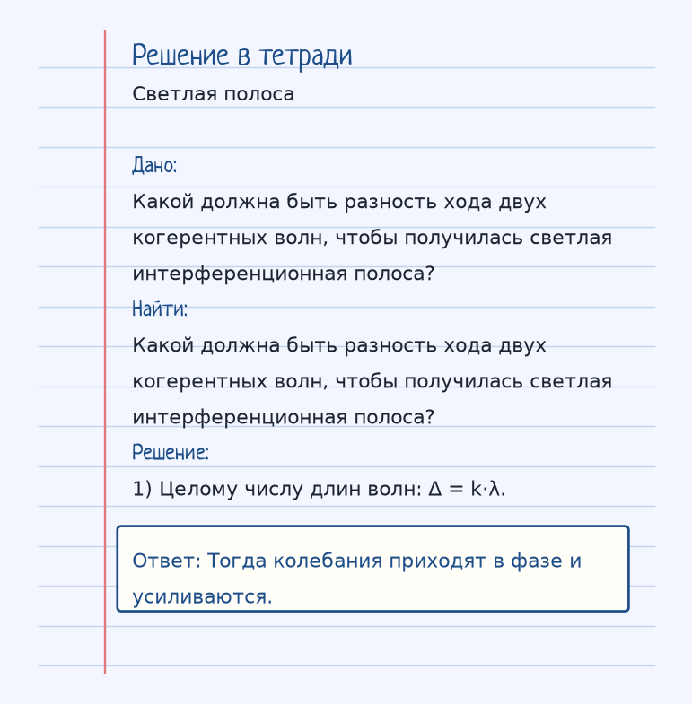
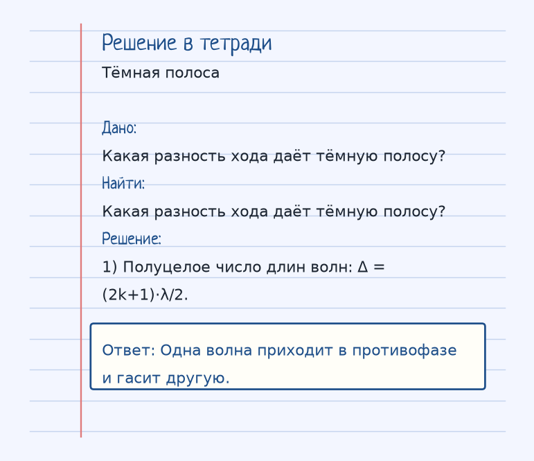

Тема «Интерференция света»: физический смысл, единицы величин, типичные ошибки и два разобранных примера.
Физический смысл
Сложение двух когерентных волн (с одинаковой частотой и постоянной разностью фаз). В результате получаются светлые и темные полосы — там, где волны усиливают или гасят друг друга.
Интерференция — сложение двух волн, у которых одна частота и постоянная разность фаз. Такие волны называют когерентными. В одних местах колебания усиливают друг друга, получается светлая полоса, в других гасят — тёмная.
Решает разность хода Δ, лишние метры, которые прошла одна волна. Светлый максимум, если Δ = k·λ, целое число длин волн, k = 0, 1, 2… Тёмный минимум, если Δ = (2k+1)·λ/2, нечётное число полуволн.
Два камня в воде дают ту же картину гребней и впадин. Свет устроен так же, только λ у видимого света доли микрометра, и полосы узкие.
Пояснение
Два камня, брошенных в воду. В одних местах волны складываются (высокие гребни), в других — гасятся (гладкая вода).
Два камня в пруд: где гребни встречаются, волна выше, где гребень с впадиной — гладко.
Типичные ошибки
Не меняй местами условия. Целое число λ — светлая полоса, полуцелое — тёмная. И волны должны быть когерентны, иначе полосы смываются.
Разобранные примеры. Решение каждого открывается отдельно.
Разбор 1
Светлая полоса
Какой должна быть разность хода двух когерентных волн, чтобы получилась светлая интерференционная полоса?
На схеме только условие. Открыть решение
Порядок записи: данные, единицы СИ, искомая величина, ход решения, ответ.
Дано. Какой должна быть разность хода двух когерентных волн, чтобы получилась светлая интерференционная полоса?
В СИ.
Найти. Какой должна быть разность хода двух когерентных волн, чтобы получилась светлая интерференционная полоса?
Решение.
Целому числу длин волн: Δ = k·λ. Тогда колебания приходят в фазе и усиливаются.

Разбор 2
Тёмная полоса
Какая разность хода даёт тёмную полосу?
На схеме только условие. Открыть решение
Порядок записи: данные, единицы СИ, искомая величина, ход решения, ответ.
Дано. Какая разность хода даёт тёмную полосу?
В СИ.
Найти. Какая разность хода даёт тёмную полосу?
Решение.
Полуцелое число длин волн: Δ = (2k+1)·λ/2. Одна волна приходит в противофазе и гасит другую.

Разбор 3
Три лямбда
Разность хода двух когерентных волн равна 3 λ. Какая полоса?
На схеме только условие. Открыть решение
Порядок записи: данные, единицы СИ, искомая величина, ход решения, ответ.
Дано. Δ = 3 λ
В СИ.
Целое число длин волн — максимум. Найти. Полоса
Решение.
Светлая. Светлая.
Разбор 4
Пять полуволн
Разность хода 2,5 λ. Какая полоса?
На схеме только условие. Открыть решение
Порядок записи: данные, единицы СИ, искомая величина, ход решения, ответ.
Дано. Δ = 5 · (λ/2)
В СИ.
Нечётное число полуволн — минимум. Найти. Полоса
Решение.
Тёмная. Тёмная.
Разбор 5
Когерентность
Какое условие нужно для устойчивой интерференционной картины?
На схеме только условие. Открыть решение
Порядок записи: данные, единицы СИ, искомая величина, ход решения, ответ.
Дано. Две волны
В СИ.
Найти. Условие
Решение.
Волны должны быть когерентны. Когерентность.
Разбор 6
Порядок
Что обозначает целое k в условии Δ = k λ?
На схеме только условие. Открыть решение
Порядок записи: данные, единицы СИ, искомая величина, ход решения, ответ.
Дано. k = 0, 1, 2…
В СИ.
Найти. k
Решение.
Порядок интерференционного максимума. Порядок максимума.
Разбор 7
Путаница
Даёт ли разность хода k λ тёмную полосу?
На схеме только условие. Открыть решение
Порядок записи: данные, единицы СИ, искомая величина, ход решения, ответ.
Дано. k целое
В СИ.
Найти. Ответ
Решение.
Нет, это светлая полоса. Нет, светлую.